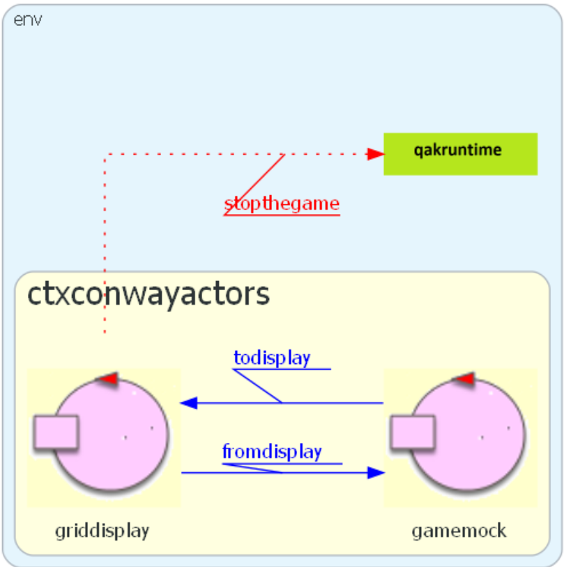
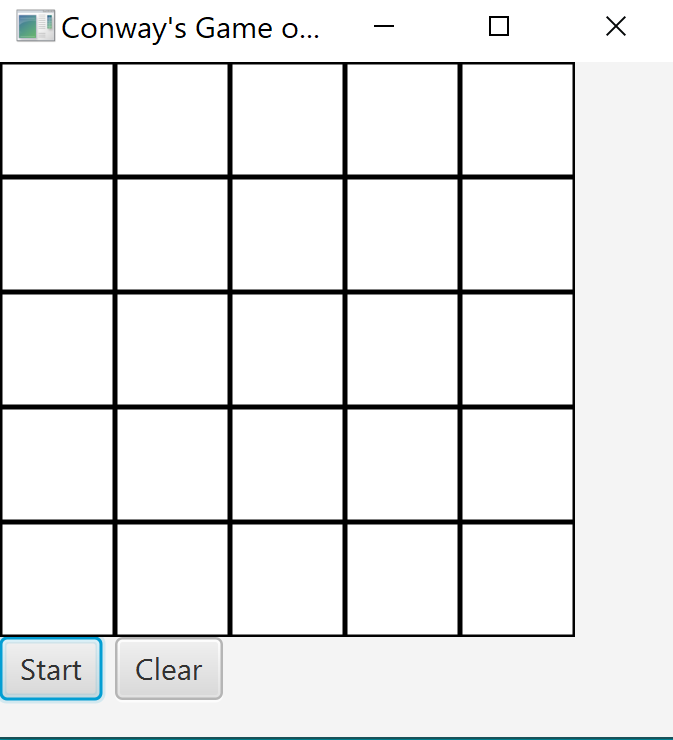

GLM-Sprint1: sottosistema di I/O¶
Il consiste nel realizzare un sistema software (che denominiamo GLM) che renda disponibile Il sottosistema di I/O.
Impostiamo il modello del sistema nel file: .
Il sottosistema di I/O¶
Supponiamo di:
denominare griddisplay il sottosistema che realizzerà il DisplayI/O;
denominare gamelife il sottosistema che realizzerà la parte applicativa;
In tal caso, dovremo realizzare:
il griddisplay, per la visualizzazione della griglia e di pulsanti di comando verso l’applicazione
funzioni per lo switch di colore di una cella da parte dell’utente finale, nella ipotesi di colorare in WHITE le celle con stato false (off) e in RED le celle con stato true (on)
funzioni per la modifica del colore (WHITE/RED) di una cella
funzioni per l’invio di informazioni (legate ai pulsanti di comando) a gamelife
Principio R_1¶
Naturalmente avremo cura di seguire il già citato principio (o regola):
, ma solo invocare funzioni definite nel livello applicativo.
Definiamo nel file gamelifeactors0.qak, un del (sotto)sistema di I/O, in cui il DisplayI/O è gestito da un attore denominato griddisplay. In assenza del sottosistema gamelife, introduciamo, per il monento, un altro attore (gamemock), per testare il comportamento di quanto stiamo realizzando. |
 |
{kind=link}
System gamelifeactors
Dispatch guicmd: guicmd(X) //X=startthegame|stopthegame
Dispatch todisplay : todisplay(CELL,STATE)
Dispatch fromdisplay: fromdisplay(CELL)
Event startthegame : startthegame(X)
Event stopthegame : stopthegame(X)
Context ctxconwayactors ip[host="localhost" port=8360]
QActor griddisplay context ctxconwayactors{ ... }
QActor gamemock context ctxconwayactors{ ... }
|
I Dispatch denotano:
Gli Event denotano:
L’Actor griddisplay un dispostivo di I/O di basso livello realizzato in JavaFX dalla classe conway.ConwayIO. |
Una GUI in JavaFX¶
Un oggetto di classe ConwayIO visualizza come riportato nella figura.
L’utente finale può usare questa rappresentazione come dispositivo di input per:
La logica applicativa può inviare messaggi todisplay all’attore griddisplay per modificare il colore delle celle della griglia in relazione alla evoluzione del gioco. |
 |
{kind=link}
I parametri delle griglia¶
I parametri delle griglia sono:
il numero delle righe rowsNum
il numero delle colonne colsNum
l’ampiezza della cella cellsize
gridConfig.json¶
I parametri delle griglia si suppongono descritti in un file di configurazione di nome gridConfig.json. Ad esempio:
{"rowsNum":5, "colsNum":5, "cellsize":45}
A questo punto è importante osservare che
{kind=link}
La struttura della soluzione concentrata rappresenta in forma di matrice un ente comune alle celle, da loro manipolabile in modo diretto. In questo senso la griglia esiste nel sistema.
In questa versione ad attori però, le celle non possono disporre di una struttura-dati comune come La struttura. Tuttavia, esse devono agire in modo da rispettare il vincolo astratto di costituire una griglia, che non esiste come struttura-dati esplicita all’interno del sistema.
GridSupport.kt: prime funzioni¶
Per agevolare la specifica delle azioni di livello applicativo, introduciamo nel file
conway.GridSupport.kt alcune prime funzioni di utilità:
saveOnFile: salva un stringa data in un file
getCellCoords: restituisce le coordinate di una cella, noto il suo nome cell_x_y
readGridConfig: acquisisce I parametri delle griglia, leggendoli da un file di configurazione
getNumOfCells: restituisce il numero complessivo delle celle
@JvmStatic¶
La annotazione @JvmStatic permette di invocare questo metodo Kotlin anche da un programma Java come metodo static.
saveOnFile¶
salva un stringa data in un file |
@JvmStatic fun saveOnFile(s: String?, fName: String?) {
try {
val myWriter = FileWriter(fName)
myWriter.write(s)
myWriter.close()
} catch (e: IOException) {
e.printStackTrace()
}
}
|
getCellCoords¶
Restituisce le coordinate di una cella, noto il suo nome cell_x_y |
@JvmStatic fun getCellCoords(name : String) : Vector<Int> {
val out = Vector<Int>()
val coords = name.replace("cellc_","").split("_")
val x = coords[0].toInt()
val y = coords[1].toInt()
out.add(x)
out.add(y)
return out
}
|
readGridConfig¶
Legge i parametri delle griglia da un file (ad es. gridConfig.json) |
@JvmStatic fun readGridConfig(fName: String):Vector<Int>{
val outV = Vector<Int>()
val jsonParser = JSONParser()
val config = File("${fName}").readText(Charsets.UTF_8)
val jsonObject = jsonParser.parse(config) as JSONObject
RowsNum = jsonObject.get("rows").toString().toInt()
ColsNum = jsonObject.get("cols").toString().toInt()
CellSize = jsonObject.get("cellsize").toString().toInt()
outV.add( RowsNum )
outV.add( ColsNum )
outV.add( CellSize )
return outV
}
|
getNumOfCells¶
Legge i parametri delle griglia dal file gridConfig.json e restituisce il numero complessivo delle celle |
@JvmStatic getNumOfCells() : Int {
val res = readGridConfig("gridConfig.json")
val RowsN= res.get(0)
val ColsN= res.get(1)
return RowsN * ColsN
}
|
griddisplay¶
Questo attore realizza il Goal Sprint1 utilizando al suo interno un oggetto (POJO) display di classe conway.ConwayIO, che assume la natura di una javafx.application.Application, che attiva il metodo launch di JavaFX.
L’inizializzazione. L’attore griddisplay
launch di JavaFX è invocato all’interno di un Thread diverso da quello dell’attore. In questo modo, griddisplay rimane capace di gestire messaggi a lui inviati dall’applicazione o da display stesso (che riceve un riferimento all’attore tramite myself). |
QActor griddisplay context ctxconwayactors{
[#
/*1*/ val display=conway.ConwayIO()//create a POJO
#]
State s0 initial{
}
/*2*/ Transition t0 whenMsg gameready->createhegui
State createhegui{
[# kotlin.concurrent.thread(start = true) {
/*3*/ display.initialize(myself) //launch
}
#]
}
Goto working
|
Fase working.
|
State working{
}
Transition t0
/*1*/ whenMsg guicmd ->guicmdhandle
/*2*/ whenMsg todisplay->todisplayhandle
|
La gestione dei comandi-utente. L’attore griddisplay gestisce i messaggi guicmd a lui inviati (tramite i pulsanti di comando) dall’oggetto di basso livello display, operando come un automa a stati finiti (FSM), il cui funzionamento è espresso dal modello qui a fianco. 
|
/* GESTONE COMANDI UTENTE */
State guicmdhandle{
onMsg( guicmd : guicmd(startthegame)){//UNIFY
forward gamelife
-m fromdisplay:fromdisplay(start)
}
onMsg( guicmd : guicmd(stopthegame)){
emit stopthegame : stopthegame(fromgui)
}
onMsg( guicmd : guicmd(click(X,Y)) ){
[# val template = "click(X,Y)"
val goal=
"${payloadArg(0)}=$template";//UNIFY
val x sysUtil.solve( goal,"X" )!!.toInt();
val y=sysUtil.solve( goal,"Y" )!!.toInt();
display.switchColor(x,y)
#]
}
onMsg( guicmd : guicmd(clear)){
[# display.clearCells() #]
}
}
Goto working
La frase risulta true quando nell coda dei messaggi dell’attore, esiste un messaggio
di nome giucmd
il cui payload (in senso Prolog) con Essa dunque funge da selettore di messsggi basato sul meccansimo di unificazione del Prolog. |
La gestione dei comandi-applicativi. L’attore griddisplay gestisce i messaggi todisplay a lui inviati dall’applicazione , operando ancora come un automa a stati finiti (FSM), il cui funzionamento è espresso dal modello qui a fianco. |
/* GESTONE COMANDI applicativi */
State todisplayhandle{
onMsg( todisplay : todisplay(CELL,STATE)){
[#
val CellName = payloadArg(0)
val State = payloadArg(1)
val coords=
conway.GridSupport.getCellCoords(CellName)
val x=coords[0]
val y=coords[1]
if( State=="true") display.cellOn( x,y )
else display.cellOff( x,y )
#]
}
}
Goto working
}//griddisplay
|
ConwayIO¶
La responsabilità di questo componente è di creare il dispositivo di basso livello per l’Input/Output fornire funzioni per il suo utilizzo.
La classe conway.ConwayIO è simile a quella introdotta in La classe ConwayIO nel
sistema concentrato, con alcune importanti differenze:
è la classe che assume la natura di una javafx.application.Application
non esiste più un oggetto istanza de La classe LifeController
i ‘click’ del mouse sui pulsanti diventano messaggi all’attore (referenziato da displayOwnerActor) che possiede il dispositivo.
ConwayIO.java come emettitore di messaggi¶
In quanto dispositivo di input in un ambiente ad attori, il componente trasforma il ‘click’ del mouse su un pulsante della GUI in un dispatch inviato all’attore che possiede il dispositivo.
L’inizializzazione.
|
package conway;
...
public class ConwayIO extends Application{
//POSESSORE DEL DISPOSITIVO
private static ActorBasic displayOwnerActor ;
/*1*/ //DICH.E RELATIVE ALLA RAPPRES. GRIGLIA
private static Rectangle[][] cells ;
private static int rows = 0;
private static int cols = 0;
private static int cellsize = 0;
//DICH. DEI COMPONENTI DELLA SCENA
private Stage stage;
private GridPane gridPane;
private Scene scene;
private Button bstart;
private Button bclear;
...
public ConwayIO( ){
super();
}
public void initialize(ActorBasic caller){
/*2*/displayOwnerActor = caller;
/*3*/Vector<Integer> p=GridSupport.INSTANCE.readGridConfig(
"gridConfig.json");
rows = p.elementAt(0);
cols = package.elementAt(1);
cellsize = p.elementAt(2);
/*4*/launch(new String[] {});
}
}
|
Funzioni di utilità in ConwayIO.
it.unibo.kactor.MsgUtil è una classe utility definita nella Infrastruttura qak |
public void cellOn(int i, int j){
if( cells == null ) return;
cells[i][j].setFill(Color.RED);
}
public void cellOff(int i, int j){
if( cells == null ) return;
cells[i][j].setFill(Color.WHITE);
}
public void clearCells() {
for (int row = 0; row < rows; row++) {
for (int col = 0; col < cols; col++) {
cellOff(row,col);
}
}
}
public void switchColor(int i, int j){
if( cells == null ) return;
if( cells[i][j].getFill() == Color.WHITE )
cells[i][j].setFill(Color.RED);
else if( cells[i][j].getFill() == Color.RED )
cells[i][j].setFill(Color.WHITE);
}
public void sendMsgToOwner(String msgId, String msgPayload) {
MsgUtil.sendMsg("gui",msgId,
msgPayload,displayOwnerActor,null);
}
|
L’attività al launch.
|
@Override
public void start(Stage primaryStage) throws Exception {
stage = primaryStage;
/*1*/createScene( );
}
//CHIUSURA DELLA FINESTRA
@Override
/*2*/public void stop(){
System.exit(0);
}
|
Creazione della scena.
|
protected void createScene( ){
gridPane = new GridPane();
scene = new Scene( gridPane,
cols*cellsize+cellsize,
rows*cellsize+cellsize);
stage.setTitle("PROTOTYPE0");
stage.setScene(scene);
/*1*/stage.setAlwaysOnTop(true);
/*2*///CREAZIONE PULSANTI COMANDO
bstart = new Button("Start");
gridPane.add(bstart, 0, rows+1);
bclear = new Button("Clear");
gridPane.add(bclear, 1, rows+1);
/*3*/setGameInput();
/*4*/createCells( );
stage.show();
}
|
Reazione ai comandi di Input.
La il gioco è lasciata a gamelife,
che in precedenza era affidata al La classe LifeController con |
protected void setGameInput() {
EventHandler<ActionEvent> event =
new EventHandler<ActionEvent>() {
public void handle(ActionEvent e) { /*1*/
String evstr = e.getSource().toString();
if(evstr.contains("Start")){
/*2*/ bstart.setText("Stop");
sendMsgToOwner("guicmd",
"guicmd(startthegame)");
}
else if(evstr.contains("Stop")){
/*2*/ bstart.setText("Start");
sendMsgToOwner("guicmd",
"guicmd(stopthegame)");
}
else if(evstr.contains("Clear")){
sendMsgToOwner("guicmd",
"guicmd(clear)");
}
}
};
bstart.setOnAction(event);
bclear.setOnAction(event);
}
|
createCells.
|
protected void createCells( ){
/*1*/cells = new Rectangle[rows][cols];
for (int row = 0; row < rows; row++) {
for (int col = 0; col < cols; col++) {
cells[row][col]=new Rectangle(cellsize,cellsize);
/*2*/ cells[row][col].setId(row+","+col);
/*3*/ cells[row][col].setFill( Color.WHITE );
cells[row][col].setStroke( Color.BLACK );
gridPane.add( cells[row][col], col, row ) ;
/*4*/ cells[row][col].addEventHandler(
MouseEvent.MOUSE_CLICKED,
e -> {
Vector<Integer> xy = cellClicked(e);
/*5*/ sendMsgToOwner("guicmd",
"guicmd(click("+xy.get(0)+","+xy.get(1)+"))");
}
);
}//col
}//row
}//createCells
|
gamemock¶
Introduciamo un attore che funga da semplice sostituto temporaneo del sottosistema gamelife.

Attività di gamemock.
|
QActor gamemock context ctxconwayactors{
State s0 initial{
println("$name | STARTS") color blue
}
Goto working
State working{
}
Transition t0
/*1*/ whenMsg fromdisplay->fromdisplayhandle
/*2*/ whenEvent stopthegame -> handlestop
State fromdisplayhandle{
/*3*/ forward griddisplay
-m todisplay:todisplay(cellc_1_1,true)
}
Goto working
State handlestop{ /*3*/
/*4*/ println("$name | GAME STOPPED") color magenta
}
Goto working
}
|
A questo punto salviamo il modello corrente nel file gamelifeactors0.qak e procediamo con un nuovo passo progettuale (GLM-Sprint2: basi di conoscenza) , relativo al gioco vero e proprio.